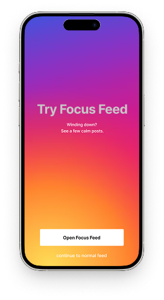
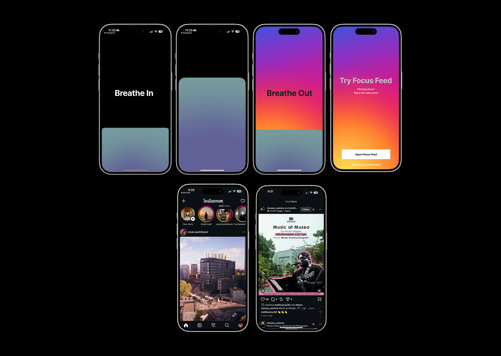

Digital Fatigue via Instagram.
Why young adults keep doomscrolling even when they know it drains them — and a concept for what a healthier alternative could look like.

PROJECT DETAILS
Type: UX Research
Role: To confirm
Team: To confirm
Duration: To confirm
Context: To confirm
Tools: FigJam, Google Forms, Instagram Story Polls
Digital Fatigue via Instagram is a research project exploring why young adults aged 18–24 keep doomscrolling despite knowing it drains them, and what a healthier alternative could look like. This case study covers the end-to-end research process — from primary and secondary research through synthesis, personas, and a concept proposal called Focus Feed.
READ THE FULL ANALYTICAL REPORTPROBLEM STATEMENT
Young adults aged 18–24 are aware that their doomscrolling habits on Instagram are compulsive and mentally draining, yet they struggle to stop. High-dopamine, low-value content keeps them engaged even as it leaves them guilty and fatigued. They need a constructive substitute that offers the same sense of escape and stimulation, but through purposeful content.
PROPOSED DIRECTION
A "Focus Feed" mode inside Instagram. When the app detects restless usage, it prompts: "Feeling restless? Try Focus Mode." Users enter a curated, ad-free, suggestion-free feed of content they've pre-selected (photography, design, close friends). The feed is finite — it ends after 15–20 posts — giving users a mental break that feels refreshing and intentional rather than draining.
The Research Process
Primary Research
Physical Interviews
15 participants
Semi-structured in-person interviews using a custom questionnaire, covering Instagram habits, emotional responses, and experiences of digital fatigue.
Online Surveys
35 responses
Google Forms, anonymous. Topics: frequency of use, self-reported fatigue, emotional impact, regulation behaviours.
Instagram Story Polls
~400 participants
Story polls and question stickers to reach a wider casual audience quickly.
Secondary Research
We reviewed research on the psychology of habit loops, addictive design patterns, digital fatigue and attention loss, and emotional dependency on social media.
Key Insights
Hours Spent on Instagram
Use is highly fragmented across the day but disproportionately concentrated at night, when self-regulation is lowest and no one is holding users accountable.
Routine and Habit Formation
Instagram has shifted from a voluntary check-in to a reflexive bedtime ritual, triggered without conscious intention.
Content Type
Low-information "brain-rot" content produces high dopamine but leaves guilt and mental fatigue; high-utility content does not.
Purpose of Use
Instagram has moved from a personal tool to a social obligation — a space users feel they must occupy.
Self-Realisation
Users have strong self-awareness of overuse but can't convert that awareness into behaviour change.
Content Value & Perception
Users justify continued use by pointing to occasional "valuable content" (tech, design, reflective posts), even when most of what they consume is low-value.
Research Dashboard
We consolidated survey responses, poll data, and interview signals into a single dashboard so patterns across ~450 data points were visible at a glance.
Open dashboardPersonas
Riya Sharma, 26
Manages digital marketing for a busy startup; analytical, trend-focused, constantly checking work and personal feeds; feels compelled to be "always online" even when exhausted.
"I scroll through Instagram to monitor my brand, but it gets overwhelming with endless updates and notifications."
Needs
- Discover marketing trends
- Precise analytics
- Manage multiple accounts
Frustrations
- Notification overload
- Platform-change learning curves
- Anxiety when stepping away
Aditya Singh, 23
Creates original music content on Instagram; trend-driven and highly connected but under constant pressure to keep up, leading to creative burnout.
"Every time I post, I check the numbers constantly — it's hard not to feel drained by the pressure."
Needs
- Grow authentic followers
- Increase reach
- Maintain a strong personal brand
Frustrations
- Algorithm unpredictability
- Creative exhaustion
- Follower comparison
Mitali Deshmukh, 20
Uses Instagram mainly to stay in touch with friends and follow entertainment accounts; enjoys memes and stories but often spends more time than intended and feels guilty afterward.
"I come to relax, but end up losing track of time and feeling like I've wasted my evening."
Needs
- Socialise with friends
- Discover interests
- Short relaxation breaks
Frustrations
- Can't limit screen time
- FOMO and life comparison
- Feels unproductive after use
Neha Patel, 31
Uses Instagram for her jewelry business — promotions, customer engagement, market research. Overwhelmed by changing algorithms and keeping up with professional demands.
"I know Instagram helps my business but all the updates, messages, and features just wear me out by the end of the day."
Needs
- Promote business
- Stay on market trends
- Process orders and queries easily
Frustrations
- Platform changes disrupt workflow
- Pressure to make diverse visual content
- Distracted by personal feeds during work hours
Research Board
Our synthesis, affinity map, and concept exploration lived on a FigJam board. Explore it below.
Open in FigJamConcept: Focus Feed

How It Works
When Instagram notices restless usage patterns, it surfaces a prompt: "Feeling restless? Try Focus Mode." Opting in drops the user into a curated feed with no ads and no suggested posts — only pre-selected content from accounts and topics they've chosen. After 15–20 posts, the feed ends.
Why This Works
It replaces the infinite, algorithm-driven scroll with a bounded, intentional session. The user still gets a break, but a finite one, so they leave feeling refreshed rather than guilty or drained.
Expected Impact
Reduced digital fatigue through fewer distractions and shorter, meaningful sessions. Encourages healthier habits, mental clarity, and more mindful engagement with social content.
REFLECTION
[Add 3–4 sentences: what you learned about researching self-aware but conflicted users, what you'd change methodologically next time, and where you'd take Focus Feed if the project continued.]